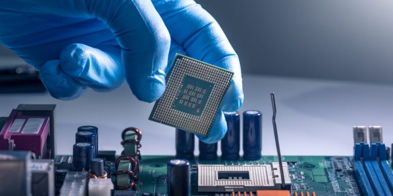

El procesador es el cerebro del sistema, justamente procesa todo lo que ocurre en la PC y ejecuta todas las acciones que existen. Cuanto más rápido sea el procesador que tiene una computadora, más rápidamente se ejecutarán las órdenes que se le den a la máquina. Este componente es parte del hardware de muchos dispositivos, no solo de tu computadora. El procesador es una pastilla de silicio que va colocada en el socket sobre la placa madre dentro del gabinete de la computadora de escritorio, la diferencia en una portátil es que está directamente soldado.
